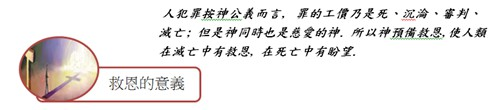

救恩
神愛世人, 甚至將祂的獨生子賜給他們, 叫一切信祂的, 不至滅亡, 返得永生.(約翰福音3:16)

- 1. 並非自救:人總喜歡自己想辦法, 連得救的事也是一樣, 如以修養、行善、宗教、教育、法律、哲學、科學及社會福利、禁慾苦修……等. 這些是本身是好的, 若想藉此解決人性的罪根, 是毫無成效, 因為人在犯罪的事上, 無法自救.
- 2. 乃是信靠: 當人類無法自救, 正在絕望之際, 耶穌基督來到世上以無罪之身被釘死在人類歷史上最殘酷的刑罰------十字架, 流血、犧牲生命, 成為人類完全的祭物. 代替人類受死, 使世人得活, 叫一切信祂的人, 不至滅亡, 返得永生. 耶穌的名字, 意思就是要將祂的百姓從罪惡中救出來, 也就是救主的意思. 只要我們來到耶穌面前接受相信就可以.
好消息!救恩獲得無須付上任何代價, 是神的恩典白白給人. 你若只是同情、贊成、欣賞的態度來看待這救恩而非自己親自接受此救恩, 此救恩仍與您無關.
獲得救恩的步驟:
- 認罪:謙卑地承認自己的罪, 不妨拿一張紙, 將所想起罪一一列出, 再逐項求主赦免; 聖經說:我
們若認自己的罪,神是信實的, 是公義的, 必要赦免我們罪, 洗淨我們一切的不義. (約壹1:9)若
信仰上得罪神, 當向神認罪, 若有得罪人的, 也當向人認錯.
- 悔改:除了承認罪外, 尚需要有離棄那些罪惡的態度與行動. 悔改的意思就是向後轉,從前面對著
黑暗, 背對著神, 一直往黑暗罪惡中走去, 現在立定心志轉過來面對神, 而離開黑暗罪惡迎著神
而來.
- 接受:凡接待祂的就是信祂名的人, 祂就賜他們權柄作神的兒女. 認罪、悔改後, 要將自己心門打
開接受耶穌成為救主,因祂的救恩才能得救. 並且也接受祂成為生命得主來管理及引導一生的新生
命.
- 救恩稱義: 人本不配得救恩, 卻蒙神恩典, 因基督耶穌的救贖, 就白白的稱義. (羅3:24)得赦免其過遮蓋其罪的, 這人是有福的. 主不算為有罪的, 這人是有福的. (羅4:7) 有罪的人得赦成為無罪的人, 並且稱義, 是神的恩典.
- 新造的人: 若有人在基督裡,他就是新造的人, 舊事已過都變成新的了. (林後5:17)接受救恩後, 過去的老我已經死了, 現在活著乃是新人, 內心充滿平安喜樂, 對於生命更有積極的意義.
- 與神和好:聖經說:你們從前與神隔絕, 因著惡行, 心裡與祂為敵, 但如今祂藉著基督的肉身受死,叫你們與自己和好. (西1:12)
- 成為神的兒女: 與神和好, 就恢復了成為神兒女的身分 (約1:12).因有這身分使基督徒都能夠在神面前承受神的基業. (西1:12)
- 得著永生:得救後即不必在永死之中受審判, 乃是在永生之中. (約3:16)此永生乃是從接受耶穌基督的那時開始, 一直到永遠, 這是得救的福分.
世界上的人, 因犯罪正在絕望之中, 神彰顯永遠的愛, 差遣祂獨生子耶穌基督降是為人, 為要將世上從罪惡和絕望中拯救出來. 使人類得此惟一希望的曙光, 因為耶穌基督是惟一的救主, 祂來為要尋找拯救失喪的人. 你願意接受嗎?